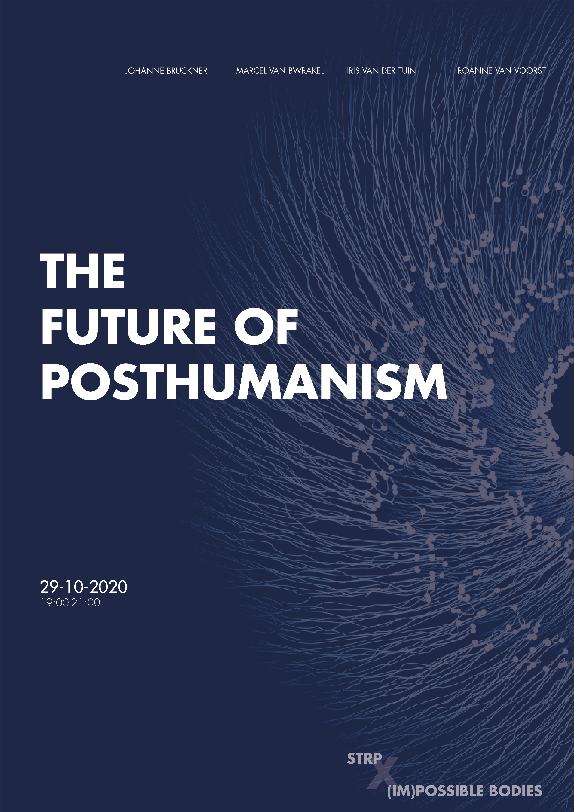
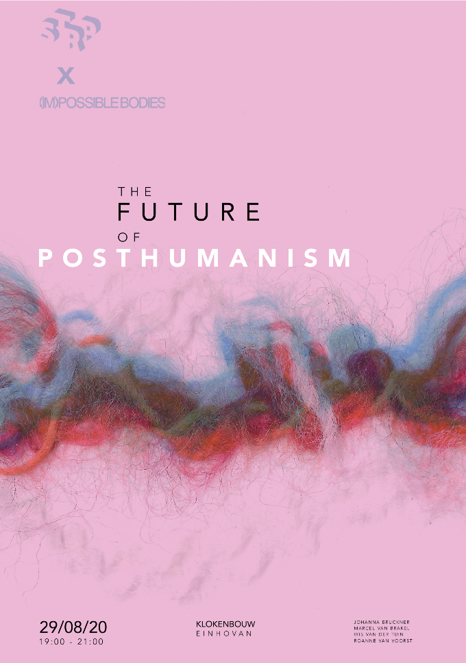
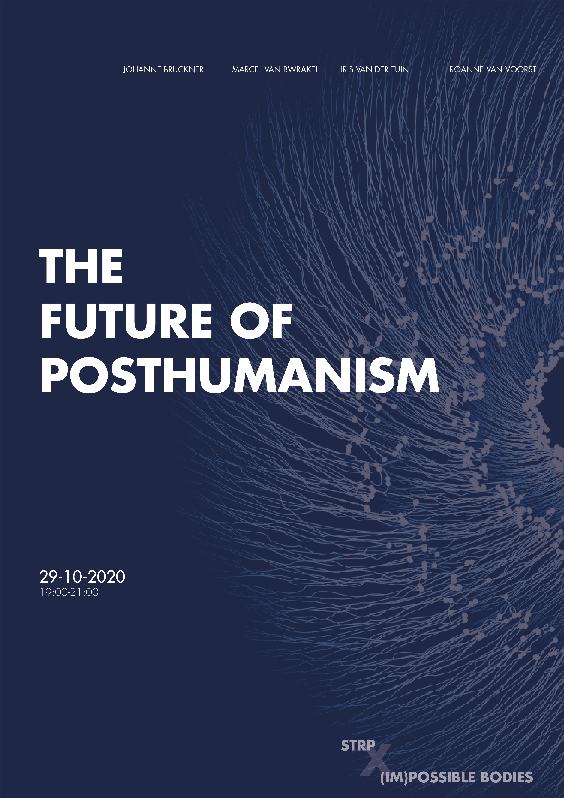
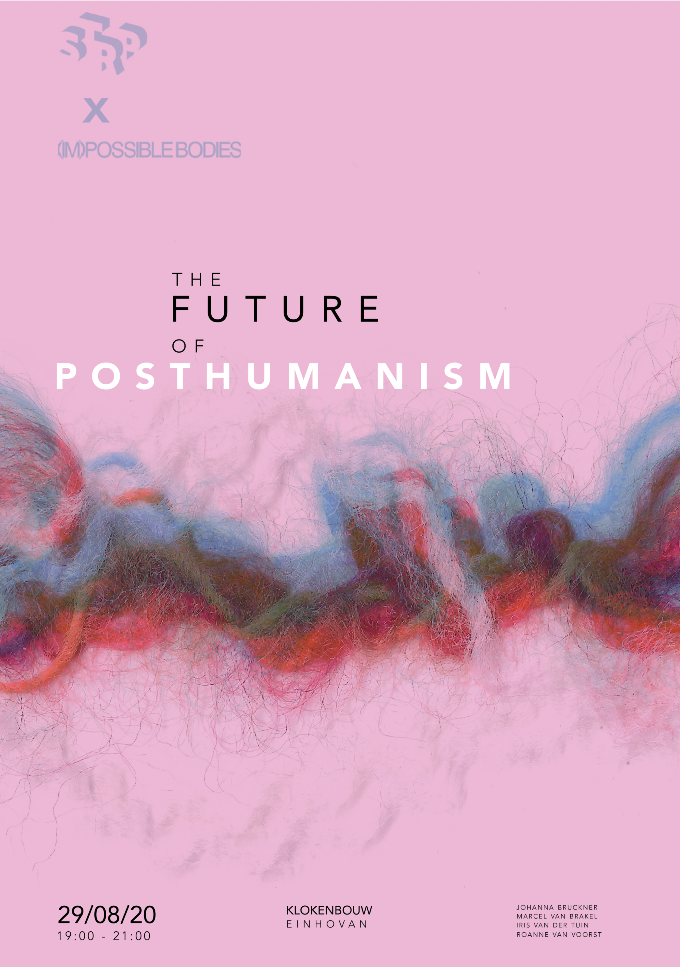
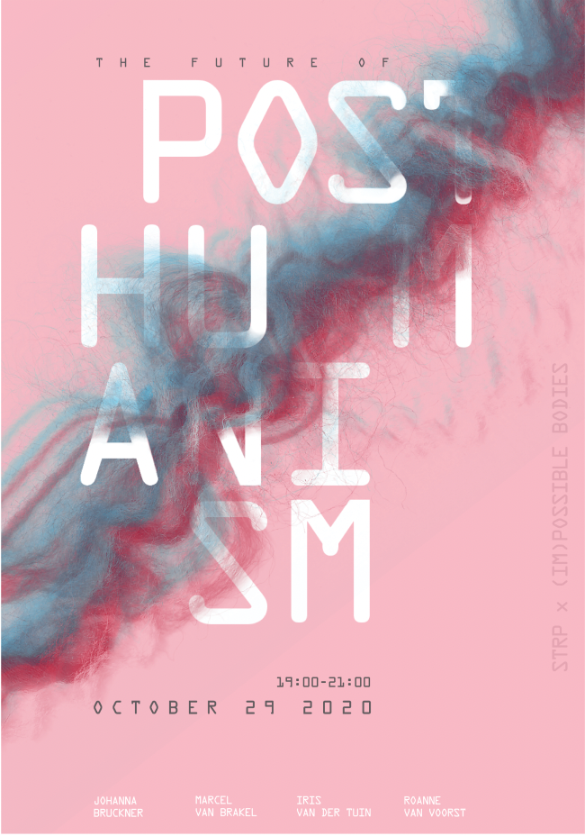
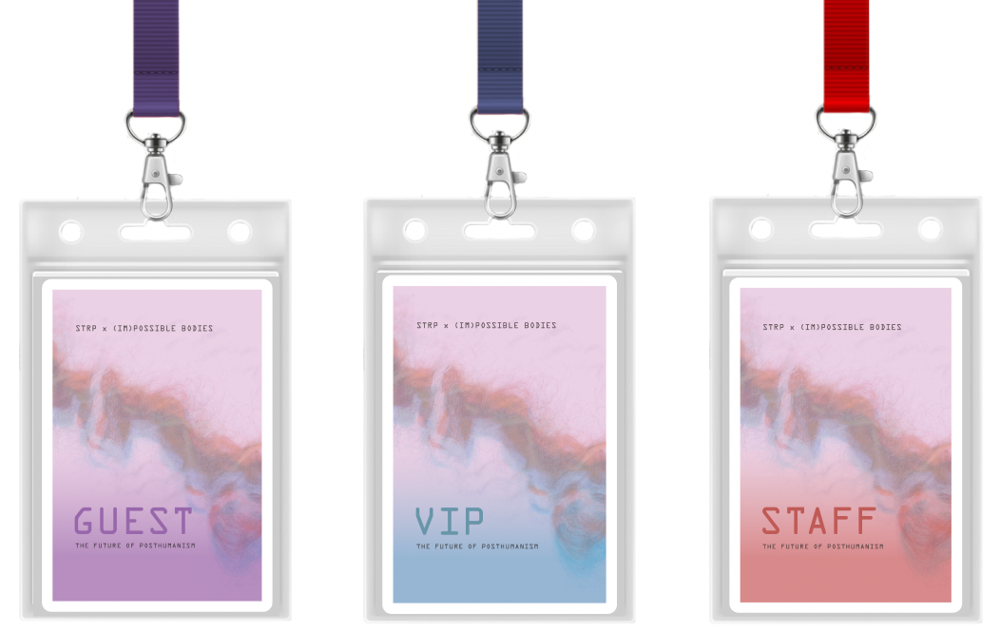
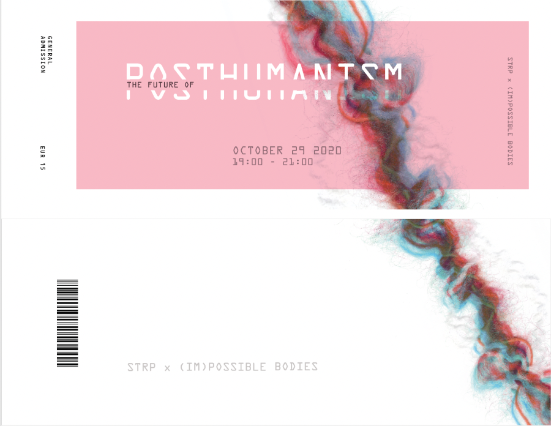
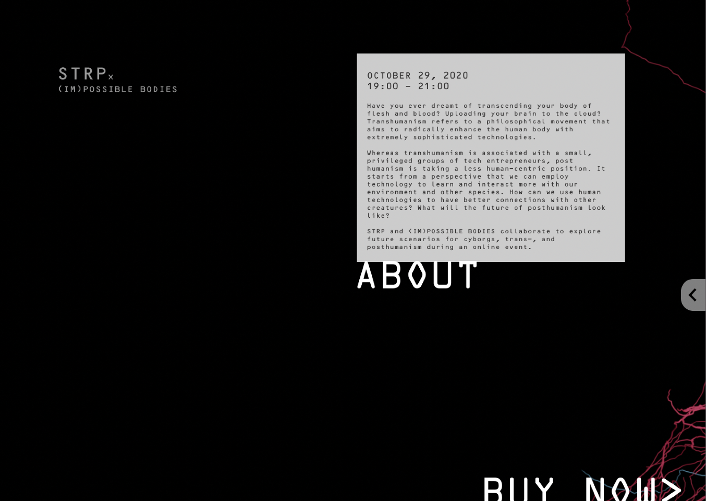
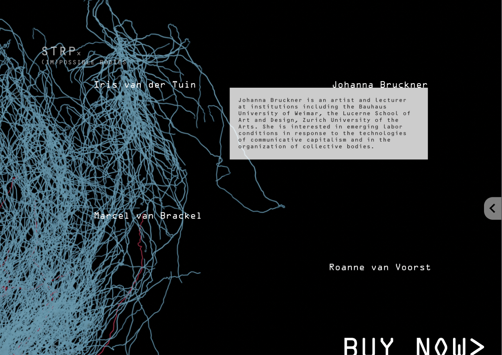

STRP Biennale

Role:
UX designer
UI designer
Graphic Designer
Team:
Alexis Lee
Anika Richards
Chinmayee Kusnur
Erin Teply
Soraya Elchehimi
Duration:
Nov 2020- Dec 2020
Fall 2020
Prompt
For a course I took, Information design, we were told to create graphic assets and a microsite for RAW colour, a design studio in Neatherlands, to showcase their work in the STRP exhibition. At the beginning of this project, we were told to study Allen Hori, an experimental designer, and take inspiration from him for this project.
Allen Hori Experimentation
We first studied and analyzed Allen Hori's work and extracted two main principles. First, using text as an image was one of the main tools he used while designing, where the text is treated in a way that it is the main element of the design and the hierarchy if the text is given as much importance as shown to an image. Second, the art of manual kerning, and the way he uses that to drive the composition.


We made three initial designs for our poster based on our research of Allen Hori's design style. Here I faced issues translating Allen Hori's
design style to our poster because his design style is very different from mine. Also, there were limited examples of his work to take substantial
inspiration from. However, I tried to break down his work into smaller pieces and analyzed just type first, then his colour usage and layers.
Therefore, by experimenting with these principles individually and as a team, we came up with these designs.
 



The first image on the left talks about how humans are on top of the food chain, and we are at the tip of the triangle, which is why we have massive ego, and we feel we are superior to everyone around us.
This is the graphic asset that Soraya and I worked on, and I was in charge of designing the poster. Here posthumanism is about combining humans with machines, and so the tiny dots with lines that make up the eye are like the fibre optic things. The eye is meant to be like a black hole for the future, with endless technological advancements. So another way to look at it is an eye, which also plays into artificial intelligence.
The image on the extreme right was inspired by the fluid curves the designer uses in his work, and we tried to incorporate that by using yarn and taking photos of it. In the third image, we have scanned a piece of yarn and used that as a graphic element. We used pink and blue colour to depict the essence of posthumanism. We did this by intertwining the yarn so that the colour red represents humans and blue represents artificial machinery.
Graphic Assets
After presenting our 3 directions, we decided to go ahead with the third idea of the fibres and here are 3 graphical assets we produced for the event: poster, lanyard cards and tickets. I was in charge of making the lanyard cards and the tickets. I wanted to use the same design style that we used in the poster here; however, I struggled to make it look different yet similar. It was difficult in the beginning to design these assets because they looked exactly like the poster. However, I tried to keep the yarn element common but just experimented with the type treatment, and I believe that the end result turned out well.



Landing page
I was one of the lead interaction designers. Here is our landing page, where again, we tried to emphasize the red and blue fibres that intertwine to depict posthumanism. I wanted to use the same concept that we implemented in our poster and convert that to a digital and interactive microsite. We used blender software and after-effects to implement the initial animation. We faced some challenges here because it was our first time working with a blender, and we had no clue how to execute a physical idea onto a microsite. However, with the help of more research and learning new software, we executed the fibre concept beautifully.

About and Speakers page
The about and speakers section of the microsite provides visitors with important information such as the event's date & time, a summary of the topics discussed during the event and information about the speakers. However, the main interaction is when the user hovers over 'ABOUT' or the speaker's name, then their details will pop up to indicate how the users will explore the event in person.


Ticket Purchase Page
On the ticket page, visitors can specify the quantity of tickets they wish to purchase. They can then proceed to enter their billing information alongside their payment information. Visitors are provided an order summary where they can proceed to confirm their purchase. When pressed, the STRP and (IM)POSSIBLE BODIES brand allows the visitor to return to the landing page.

Reflection
This was the first class at university where I was introduced to UX design, and I was immediately interested in it. This project as a whole taught me so much about typography, colour and, more importantly, how to integrate connotations and concepts in what we design to create human-centric experiences. I am incredibly proud of our team for incorporating our physical exploration of threads and yarn into our final design. This was a learning process, and I believe that we did a great job in the end.